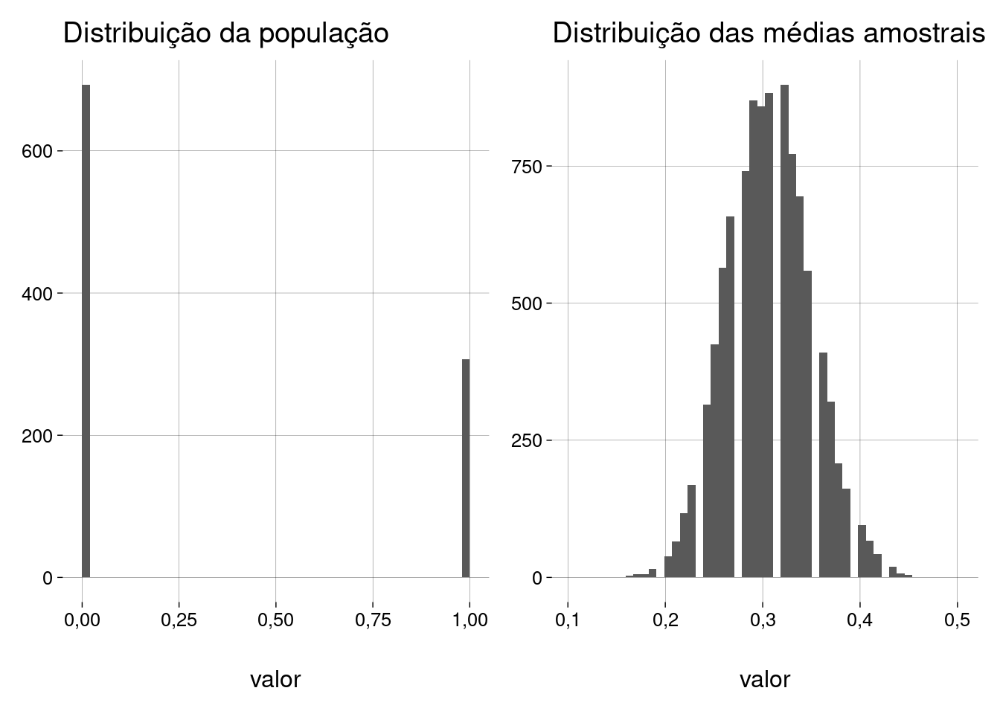

Capítulo 15 Proporções
O TCL fala de médias, mas também serve para proporções.
Exemplo: de uma população de \(1.000\) pessoas, você extrai uma amostra de \(100\) pessoas e calcula a proporção \(\hat p\) de fumantes na amostra. O que o TCL diz sobre \(\hat p\)?
-
\(\hat p\) é o número \(k\) de fumantes na amostra, dividido pelo tamanho da amostra \(n\):
\[ \hat p = \frac kn \]
-
Mas isto também pode ser calculado da seguinte forma:
-
Represente cada pessoa da amostra por \(0\) ou por \(1\), dependendo de se ela é não-fumante ou fumante, respectivamente. Isto equivale a definir \(n\) variáveis aleatórias \(X_1, X_2, \ldots, X_n\), tais que
\[ X_i = \begin{cases} 0 & \text{se a pessoa } i \text{ é não-fumante}\\ 1 & \text{se a pessoa } i \text{ é fumante} \end{cases} \]
Em R, guarde todos estes \(0\)s e \(1\)s em um vetor
X. O número de fumantes na amostra vai ser \(\sum X_i\), ou, em R,
sum(X).-
Se você dividir esta soma por \(n\), você terá a média de todas as variáveis \(X_i\), que é exatamente a proporção de fumantes na amostra. Em R,
mean(X).\[ \hat p = \frac{\sum X_i}{n} \]
Conclusão: a proporção também é uma média, e também obedece ao TCL.
-
O TCL diz que a distribuição amostral de \(\hat p\) é normal.
-
O TCL diz que o valor esperado de \(\hat p\) é a proporção \(p\) de fumantes na população. Ou seja, se você retirar muitas amostras de \(n\) pessoas, a média das proporções amostrais vai ser a proporção populacional.
\[ E(\hat p) = p \]
Usando a terminologia que já vimos, \(\hat p\) é um estimador não-tendencioso de \(p\).
Para calcular o desvio padrão, pense que uma proporção tem tudo a ver com uma variável aleatória binomial \(Y = {}\) número de fumantes (sucessos) em uma amostra de \(n\) pessoas (\(n\) provas de Bernoulli), onde cada pessoa tem probabilidade \(\hat p\) de ser fumante (\(\hat p\) é a proporção de fumantes na amostra).
Por este raciocínio, a proporção amostral é \(\frac Yn\).
Da aula sobre variáveis aleatórias discretas, você lembra que \(Y\) tem variância \(n\hat p (1 - \hat p)\) e, daí, desvio padrão \(\sqrt{\hat p (1 - \hat p)}\).
-
O TCL diz que o desvio padrão da distribuição amostral de \(\hat p\) vai ser
\[ \frac{\sqrt{\hat p (1 - \hat p)}}{\sqrt{n}} \quad=\quad \sqrt{\frac{\hat p (1 - \hat p)}{n}} \]
-
Vamos fazer uma simulação:
tamanho_populacao <- 1e3 tamanho_amostra <- 100 qtde_amostras <- 1e4 proporcao_pop <- .3 populacao <- sample( 0:1, tamanho_populacao, replace = TRUE, prob = c(1 - proporcao_pop, proporcao_pop) )## Média da população = 0,307 ## Desvio padrão da população = 0,461 ## ## Quantidade de amostras = 10000 ## Tamanho da amostra = 100 ## ## Média das médias amostrais = 0,307 ## D.P. das médias amostrais = 0,043